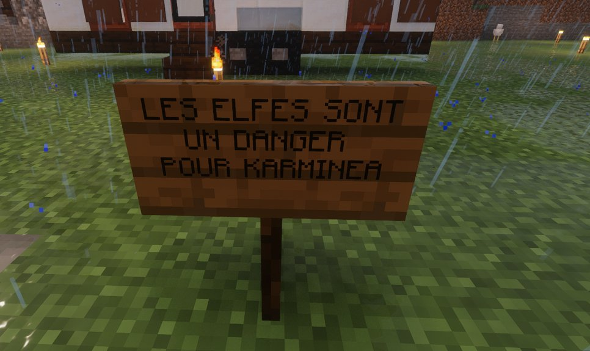

Vague de messages inquiétants dans Karminéa : des panneaux accusent les elfes d'être un danger pour la ville
Des panneaux affichant sans ambiguïté "Les elfes sont un danger pour Karminéa" ont été retrouvés dans plusieurs quartiers. Une opération qui semble coordonnée, dans un contexte déjà fragile.

Une série de panneaux a récemment été découverte dans plusieurs quartiers de Karminéa, affichant sans ambiguïté : "Les elfes sont un danger pour Karminéa". Ces inscriptions, visibles à de nombreux endroits de la ville, ont immédiatement suscité l'inquiétude des habitants et ravivé les tensions déjà présentes dans l'espace public.
Une ville marquée par la peur
Les premiers panneaux ont été signalés dans différents secteurs de la ville, donnant l'impression d'une opération coordonnée. Leur multiplication en peu de temps a surpris de nombreux citoyens, qui y voient un message volontairement provocateur. Dans un contexte déjà fragile, ce type d'affichage risque d'alimenter davantage les divisions au sein de Karminéa.
Plusieurs habitants interrogés sur place disent avoir été choqués par le contenu des messages, jugé à la fois alarmant et stigmatisant. Pour beaucoup, ces panneaux ne relèvent pas d'un simple acte de communication, mais d'une tentative claire d'installer la méfiance dans l'esprit du public.
Une accusation lourde de sens
La phrase affichée ne laisse place à aucune nuance : une telle formulation, générale et catégorique, vise directement une population entière et soulève naturellement des questions sur les intentions de ses auteurs. À ce stade, aucune revendication officielle n'a permis d'identifier avec certitude les responsables de cette campagne d'affichage.
Des tensions qui s'aggravent
Cette affaire intervient alors que Karminéa traverse déjà une période de fortes tensions. Plusieurs voix appellent désormais au calme et à la vigilance, afin d'éviter que ce type de message ne dégénère en affrontements ou en amalgames.
Le Karmine Déchaîné rappelle qu'un message public diffusé à grande échelle peut avoir des conséquences importantes sur le climat social. Dans une ville comme Karminéa, où les équilibres sont fragiles, la responsabilité de chacun devient essentielle.
Une affaire à suivre
Reste à déterminer qui se cache derrière cette série de panneaux, dans quel but ils ont été installés, et si d'autres messages du même type pourraient apparaître dans les prochains jours. Le Karmine Déchaîné continuera de suivre cette affaire de près.
"Quand un message divise toute une ville, ce n'est jamais un simple panneau."
— La Rédaction du Karmine Déchaîné